拾人 -ひろいびと- 〜神造武具トレハン・ハクスラRPG〜
開発：hajime kaihatsu（個人）／Android・基本無料
配信・動画投稿について | プライバシーポリシー
記事・動画でのご紹介にあたって、事前のご連絡や許諾の申請は不要です。 このページの文章と画像は、本作の紹介を目的とする記事・動画に自由にお使いいただけます。 トリミングや文字入れなどの改変も差し支えありません。
| タイトル | 拾人 -ひろいびと- 〜神造武具トレハン・ハクスラRPG〜 |
|---|---|
| 読み | ひろいびと |
| ジャンル | 2Dドット絵の見下ろし型ハクスラRPG |
| 配信日 | 近日配信予定（日程が決まりしだい掲載します） |
| 対応機種 | Android（Google Play） |
| 価格 | 基本無料（広告あり／アプリ内課金なし） |
| 言語 | 日本語 |
| プレイ人数 | 1人 |
| 操作 | スマートフォンの縦持ち・片手操作 |
| セーブ | 自動 |
| 開発・発売 | hajime kaihatsu（個人） |
| 公式X | https://x.com/hajime_kaihatsu |
| ストアページ | 公開日に掲載します |
担げるだけ拾って帰る、2Dドット絵のハクスラRPG。
穴に潜り、武具を拾い、担いで持ち帰る2Dドット絵のハクスラRPG。持ち帰れる重さには限りがあり、何を担いで何を置いていくかが毎回の判断になります。持ち帰った武具は鍛え直して、また深くへ。地下150階。
『拾人 -ひろいびと-』は、町の外れにある底の見えない穴へ潜り、武具を拾い、担いで持ち帰る2Dドット絵の見下ろし型ハクスラRPGです。 拾った武具にはひとつずつ「目方」があり、担いで帰れる量は「担力」で決まっています。両腕いっぱいに抱えて引き返すか、身軽なまま、もう一階だけ深くを目指すか。欲を出しすぎると階段までたどり着けず、力尽きれば、その潜行で拾ったものも、持ち込んだ荷物も失います。手元に残るのは、身につけている武具と預り倉のものだけです。 持ち帰った武具は町の買取屋で銭に換え、装備を整えて、また潜る。深く潜って「名無し」と呼ばれる者を倒すと、彼らが町に住みついて、できることが増えていきます。武具に段をつける打ち直し、出来のよさを引き直す振り直し、毎日入れる短い穴、留守中に代わりに潜ってくれる者——町は、潜るほどに賑やかになります。 穴は地下150階。30階ごとに5つの層に分かれ、それぞれに層の主が待っています。 1回の潜行は数分。スマートフォンの縦持ち、片手で遊べます。
拾った武具にはひとつずつ目方があり、持ち帰れる量は担力で決まっています。総目方が担力を超えると足が鈍り、逃げられなくなります。「全部持って帰りたい」と「生きて帰りたい」が、毎回まっすぐぶつかります。
階段では降りるか、町へ戻るかを選べます。戻れば拾ったものは確実に残り、力尽きれば、その潜行の収穫も、持ち込んだ荷物も失います。手元に残るのは身につけている武具と預り倉のものだけなので、潜るたびに「どこで切り上げるか」を選ばされます。
30階ごとに層が変わり、出る敵も地の色も変わります。10階ごとに中ボス、30階ごとに層の主。10階の節目に着くと次からその階を選んで潜れるので、毎回1階からやり直す必要はありません。
武具には位列（軽物から無量まで7段階）と、頭につく二つ名があります。同じ名前の武器でも、位列・二つ名・出来のよさの組み合わせで、強さも重さも売値も変わります。町では打ち直し（必ず成功して強くなる）と振り直し（上がることも下がることもある）で、拾った1本を育てられます。
穴の底には名無しと呼ばれる者たちがいます。倒すと町の井戸端に住みつき、町でできることが増えます。打ち直しも、毎日入れる短い穴も、留守中に代わりに潜ってくれる者も、みな名無しが持ってくるものです。14人います。
画像は右クリック（スマートフォンは長押し）で保存できます。
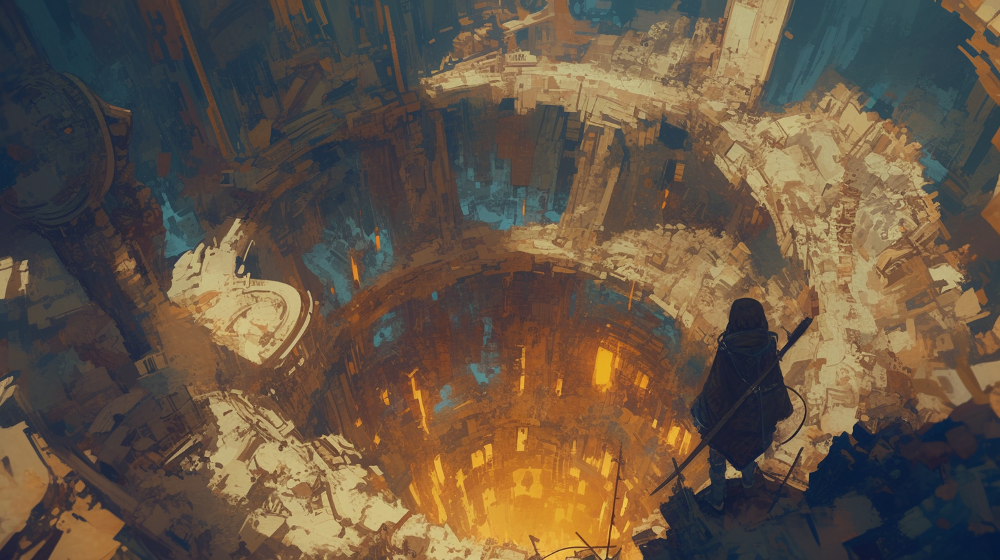
キーアート
穴を見下ろす主人公
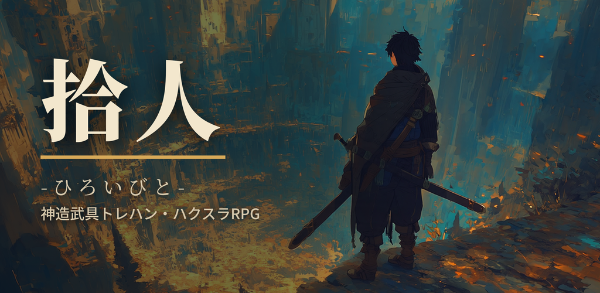
フィーチャーグラフィック
1,024×500
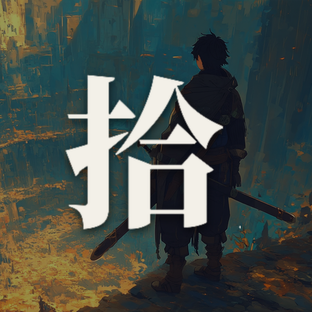
アプリアイコン
512×512
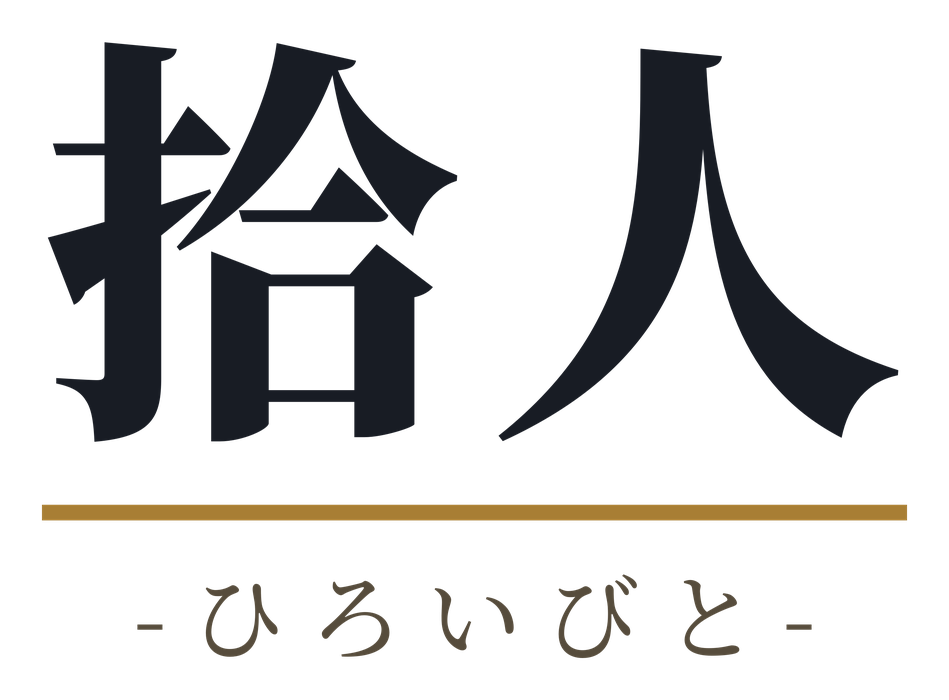
ロゴ（白背景用）
背景透過・濃色。記事の白背景に
ロゴ（暗い背景用）
背景透過・淡色。暗い背景やサムネイルに
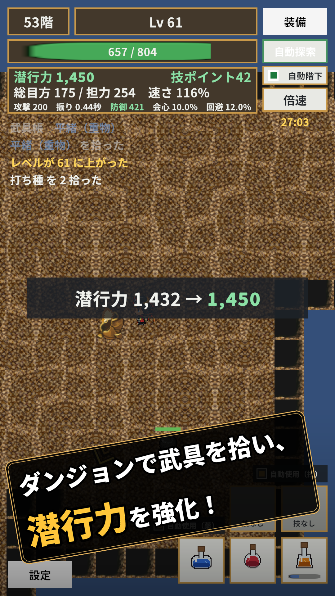
ダンジョン
穴の中。武具を拾うと潜行力が上がる
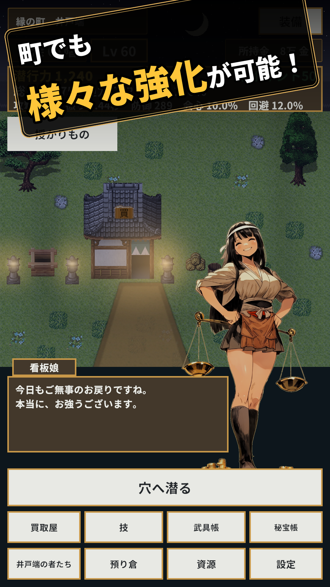
町
町の井戸端。ここから穴へ潜る
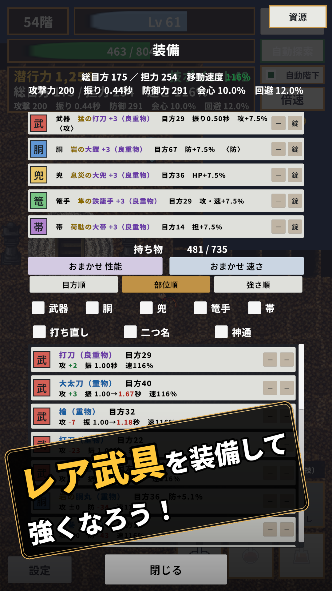
装備
拾った武具を装備する画面。位列と二つ名が並ぶ
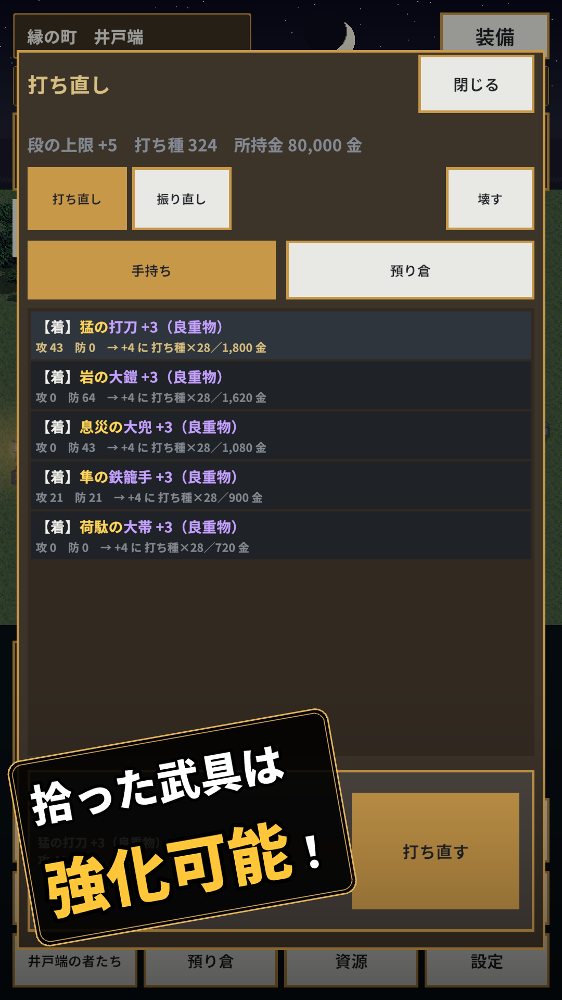
打ち直し
武具に段をつけて強くする
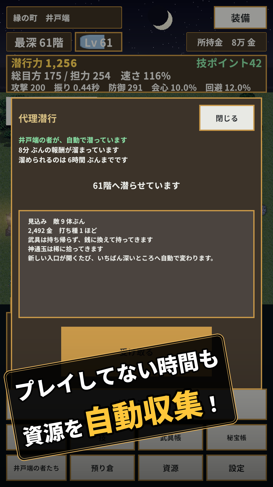
代理潜行
留守中に名無しが代わりに潜る
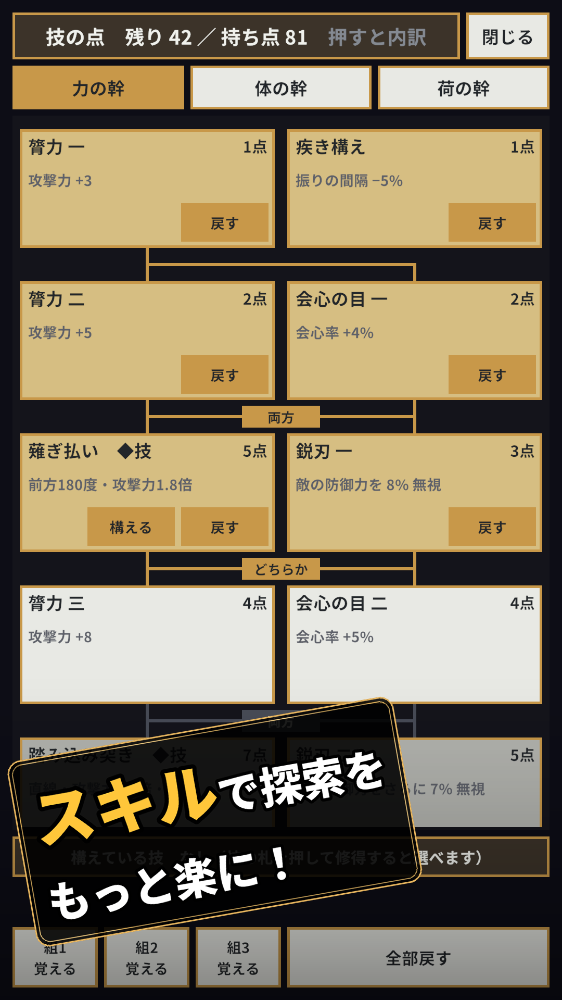
技
覚えた技を組み替える
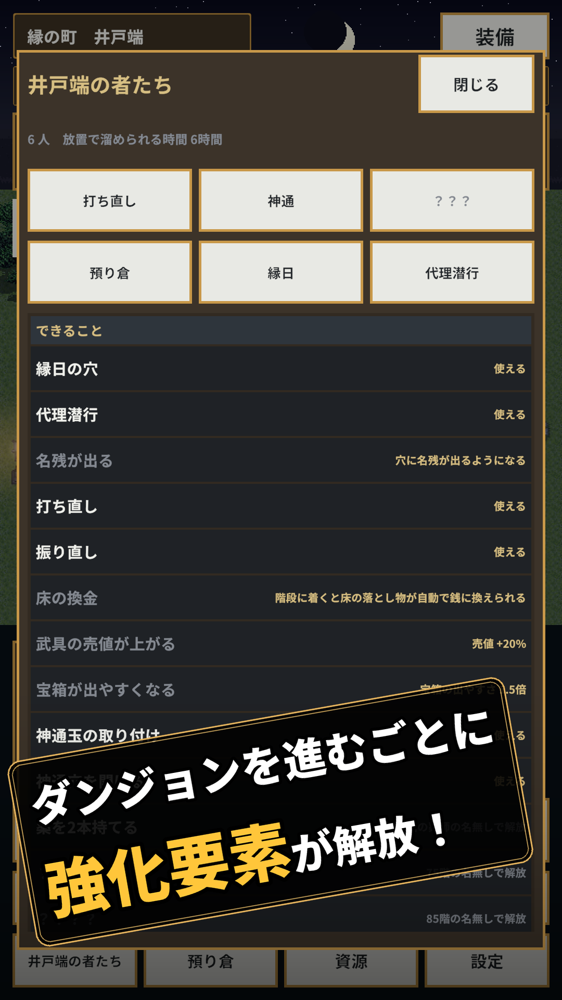
井戸端
名無しが持ってくる「できること」の一覧
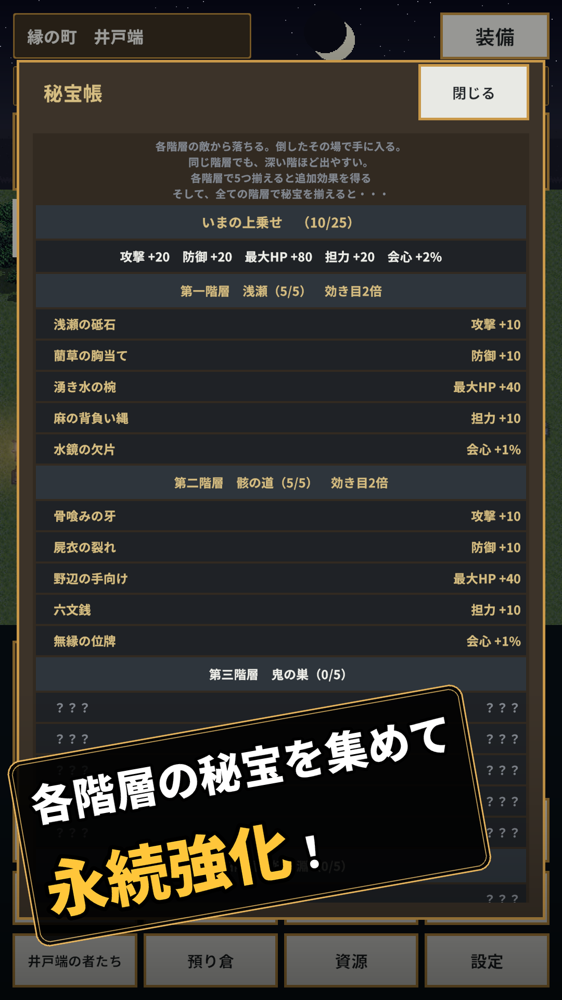
秘宝帳
各階層の秘宝を集めて永続強化
いずれも実機の画面（1,080×1,920）に、日本語のキャッチを合成したものです。キャッチなしの版が必要な場合はお知らせください。
本ページの画像は、『拾人 -ひろいびと-』の紹介を目的とする記事・動画に 自由にお使いいただけます。事前のご連絡は不要です。 改変（トリミング・文字入れ）も差し支えありません。 【AI生成について】 キーアート、キャラクターイラスト、アプリアイコン、 フィーチャーグラフィック、ロゴは画像生成AIを用いて制作しています。 スクリーンショットは実機のゲーム画面であり、AIは使用していません。
本作を遊んでいる様子の配信・動画投稿は、ご自由にどうぞ。
収益化していただいて構いません。事前のご連絡も要りません。
ただし、本作の音楽や絵などの素材だけを抜き出しての配布・再配布は、ご遠慮ください。
他の作者からお借りしている素材が含まれており、こちらでは許可を出せないためです。
詳しくは 配信・動画投稿について をご覧ください。
『拾人 -ひろいびと-』は、hajime kaihatsu が個人で制作した作品です。 「拾う」と「持ち帰る」を、ゲームの真ん中に置きたいと考えて作りました。 多くのハクスラでは、拾ったものは無制限に持ち帰れます。 本作では持ち帰れる量に上限があるので、「拾った瞬間」で終わらず、 「これを担いで帰るか、置いていくか」という判断がもう一度発生します。 欲を出すと失う。でも、欲を出さないと強くなれない。 その綱引きを、1回数分の潜行のなかに収めることを目指しました。
| 開発環境 | Unity |
|---|---|
| 穴の深さ | 地下150階（30階ごとに5層） |
| 名無し | 14人。倒すと町でできることが増えます |
| 武器 | 5種類（短刀・打刀・槍・大太刀・鉄棍）。重い武器ほど威力が高くなります |
| 素材のお借り先 | ぴぽや倉庫／Kenney／効果音ラボ／魔王魂／PixelMplus／REFMAP／ブーソン |
取材・試遊のご依頼、そのほかのお問い合わせは下記へお願いいたします。
メール：k.gamekaihatsu@gmail.com
X：@hajime_kaihatsu
公開前でも、先行してお試しいただけます。ご希望の際はお知らせください。
{kind=link}
{kind=link}
{kind=link}
{kind=link}
{kind=link}
{kind=link}
{kind=link}
{kind=link}
{kind=link}
{kind=link}
{kind=link}
{kind=link}
{kind=link}